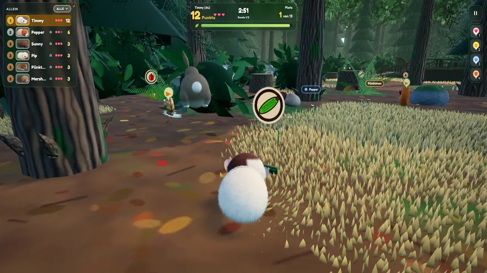
1
Ab auf die Wiese!
Bis zu 13 Meerschweinchen rennen nach demselben Futter – echte Spieler online, Computer-Tiere füllen die Wiese auf. Die Tabelle zeigt, wer vorn liegt.
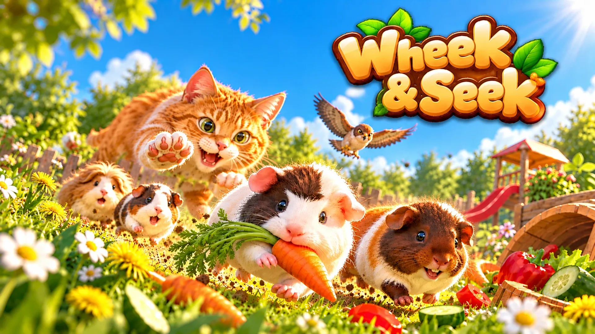
Das kostenlose Meerschweinchen-Rennen im Browser. Futter finden, größer werden und Gefahren ausweichen – zusammen mit bis zu 12 anderen Spielern.
Ein Cup hat drei Runden à drei Minuten. Wer die meisten Punkte sammelt, gewinnt die Runde – und in den letzten 15 Sekunden wird die Uhr rot.

Bis zu 13 Meerschweinchen rennen nach demselben Futter – echte Spieler online, Computer-Tiere füllen die Wiese auf. Die Tabelle zeigt, wer vorn liegt.
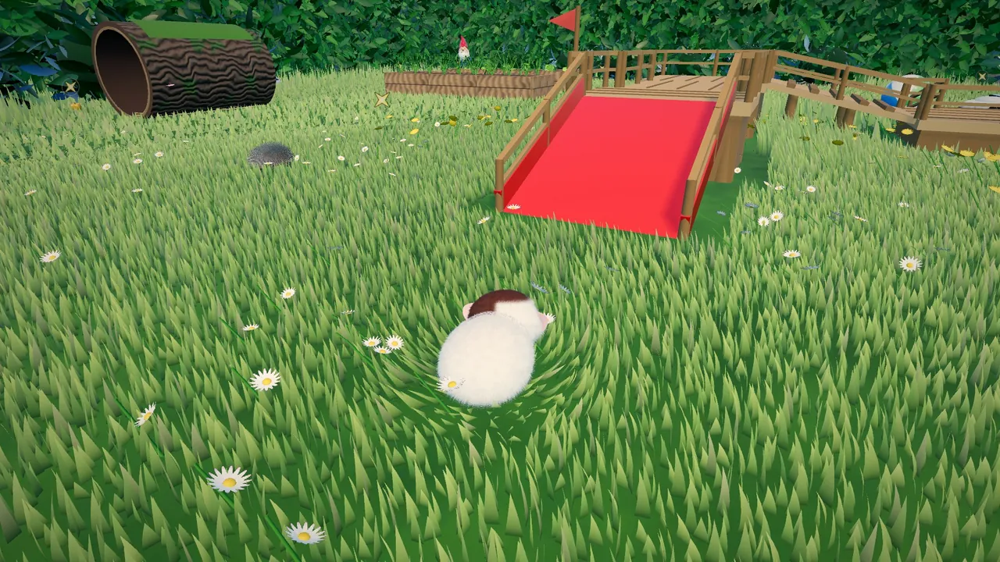
Ein Pfeil zeigt zum nächsten Happen. Jeder Bissen bringt Punkte – und mit jedem Punkt wird dein Meerschweinchen größer. Die goldene Möhre bringt am meisten.
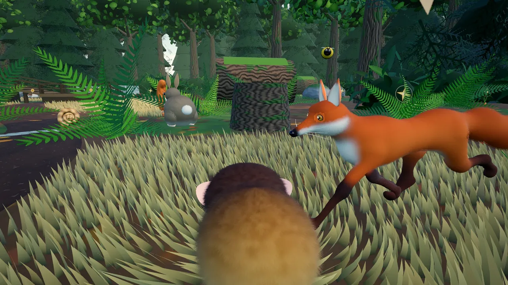
Katze, Fuchs und Co. jagen dich. Versteck dich, lauf weg, setze dein Talent im richtigen Moment ein – oder vertreib die Kleinen mit dem Wheek-Ruf.
Echte Spielszenen aus Version 3.0: eine Runde des Wiesen-Cups im Wald.
Jeder Ort hat sein eigenes Aussehen, seine eigenen Tiere und seine eigenen Gefahren.
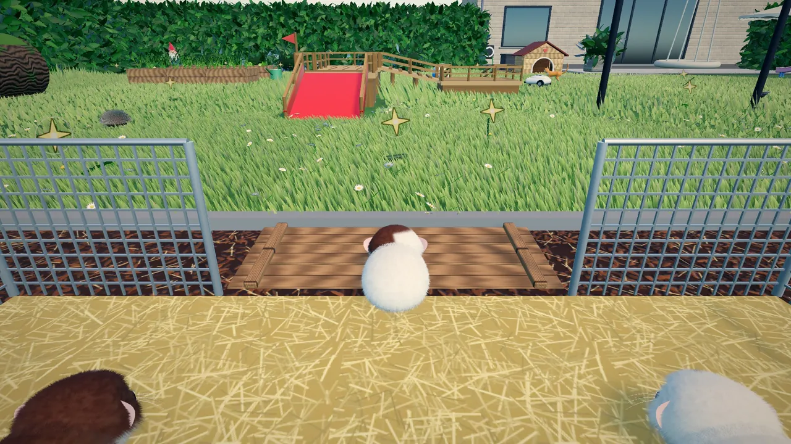
Hohes Gras, Hecken, ein Rasenroboter und ein Holz-Parcours mit Rampen und Brücke. Hier fängt alles an – und hier lauert die Katze.
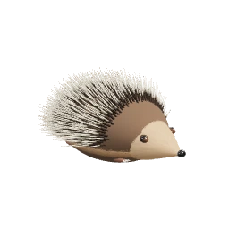
Igel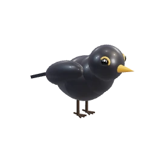
Amsel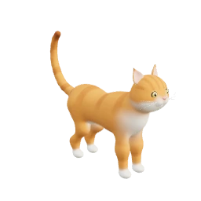
Katze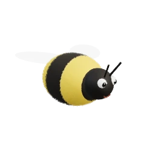
Hummel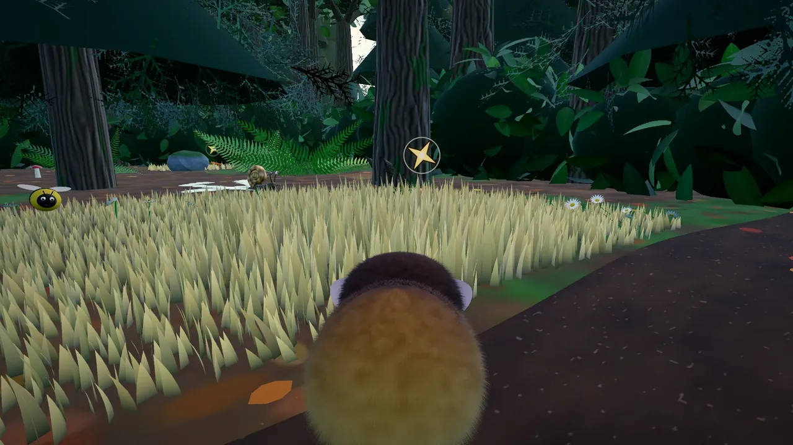
Weiches Licht, goldenes Gras, Baumstämme und Farne. Rehe und Eichhörnchen sehen dir beim Rennen zu – und zwischen den Bäumen schleicht ein Fuchs.
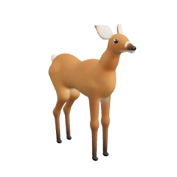
Reh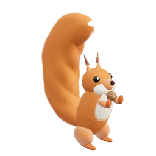
Eichhörnchen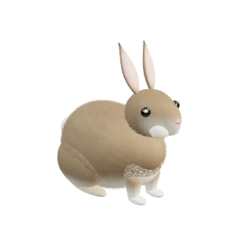
Hase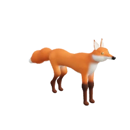
Fuchs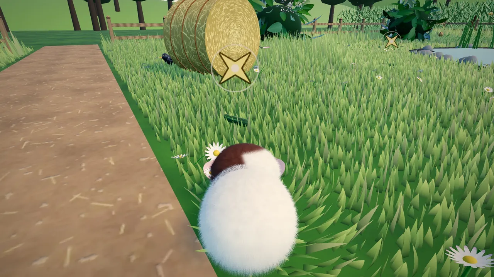
Eine Scheune, ein Traktor, Heuballen und ein Teich. Hühner, Schafe und Kühe sind hier zu Hause – und ein Hahn und eine Gans, die keinen Spaß verstehen. Jeder Cup führt dich über alle drei Orte.
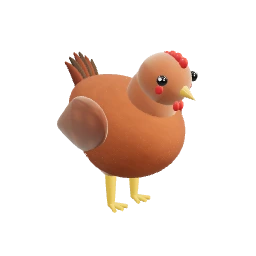
Huhn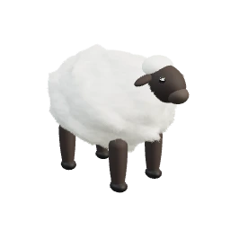
Schaf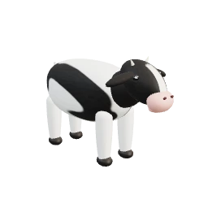
Kuh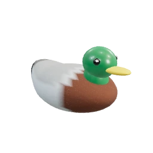
Ente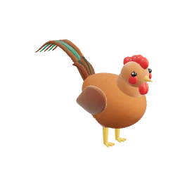
HahnNicht alle wollen, dass du gewinnst.
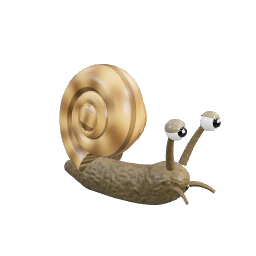
Frisst dein Futter weg und hinterlässt Schleim, auf dem du ausrutschst.
Stürzt sich aus der Luft auf dich.
Wer hineinläuft, verliert ein Herz.
Jagt dich quer durch den Garten.
Schleicht durch den Wald – und ist schnell.
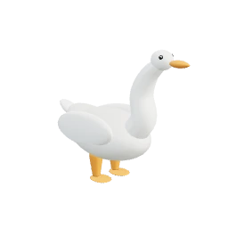
Die Wächter des Hofs. Besuch mögen sie nicht.
Wenn ihr Schatten rot blinkt, schlagen sie gleich zu.
Rollt durch den Garten und hält für niemanden an.
Jede Runde bringt Erfahrungspunkte. Mit jeder Stufe wird mehr frei: Rassen, Muster, Farben, Zubehör und Talente.
Rennt gemeinsam auf einer Wiese – mit echten Spielern, einem Freund oder Computer-Meerschweinchen, die das Feld auffüllen.
Tippe auf Spielen und du kommst auf eine Wiese mit bis zu 12 echten Spielern. Ist sie nicht voll, füllen Computer-Meerschweinchen auf – du wartest nie.
Öffne einen privaten Raum für zwei und teile Code oder Link. Dein Freund tritt bei, und ihr rennt in denselben Garten.
Kein Chat und keine Namen zum Eintippen – nur vier kleine Bild-Reaktionen zum Grüßen, Jubeln, Weinen oder Schimpfen.
Die erste Runde erklärt dir die ersten Schritte, Schritt für Schritt.
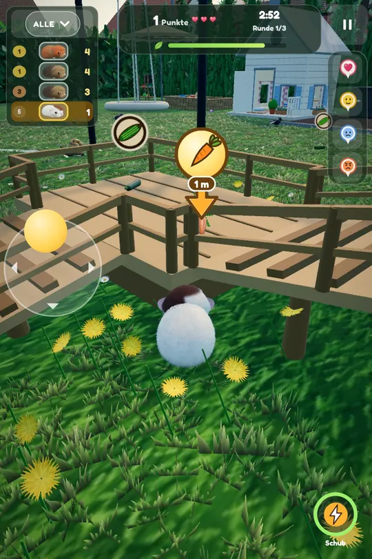
Nein. Wheek & Seek ist kostenlos, ohne Käufe und ohne Anmeldung. Auf Spieleportalen kann neben dem Spiel Werbung laufen.
Auf Computer, Handy und Tablet – direkt im Browser, ohne Download. Auf dem Handy geht hoch und quer.
Nein. Computer-Meerschweinchen füllen die Wiese auf, es gibt immer ein volles Rennen. Wer online ist, trifft echte Spieler.
Ein Cup hat drei Runden à drei Minuten – also bis zu neun Minuten. Über das Pausenmenü kannst du jederzeit aufhören.
Ja, automatisch. Bei CrazyGames folgt er deinem Konto auf jedes Gerät, sonst bleibt er im Browser dieses Geräts.
Es gibt keine Gewalt, keinen Chat und keine Käufe. Bei CrazyGames ist es für Spieler ab 12 eingestuft. Katze und Fuchs jagen dich, aber freundlich gezeichnet.
Deutsch, English, Español, Português, Français, Italiano, Polski, Türkçe, Bahasa Indonesia, Tiếng Việt, Русский, Українська, ไทย, العربية, 日本語.
Wir zählen nur anonym, wie das Spiel genutzt wird – im Menü kannst du das ausschalten. Es gibt keine Namen und keinen Chat. Details stehen in der Datenschutzerklärung.